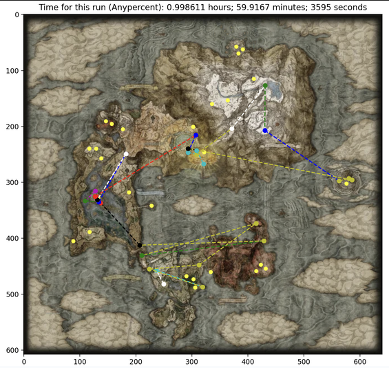
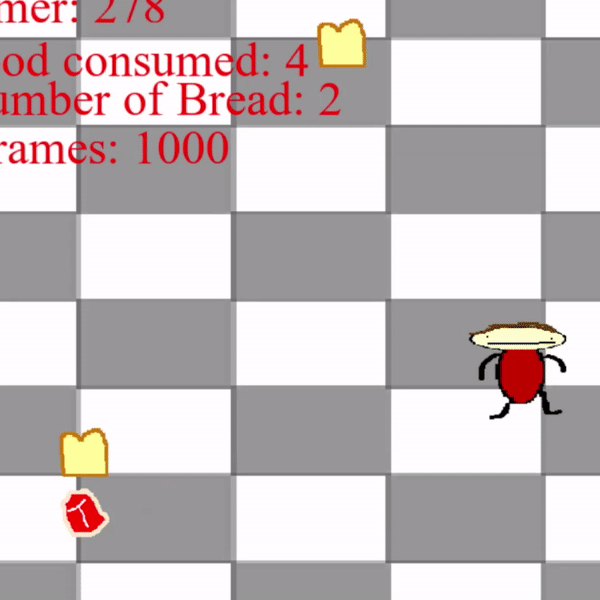
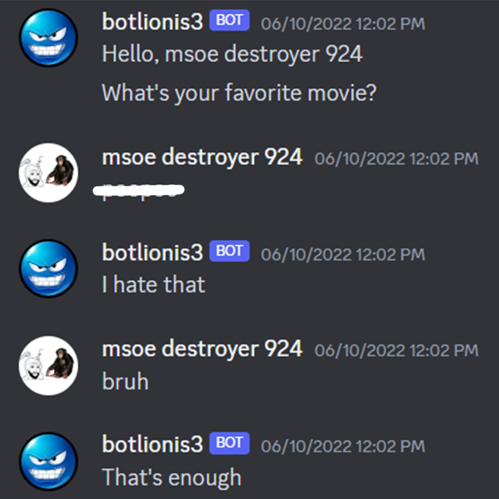
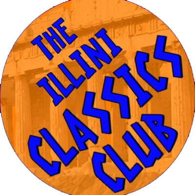

Hello there!
(If you can say a fitting follow-up line (whether it be from Star Wars or the blink-182 song), we could definitely be friends.)
My name is Malcolm and I'm a student of Computer Science and Anthropology at the University of Illinois at Urbana-Champaign (UIUC). "What a strange combination of fields," you're probably thinking. I agree, but at the same time, it's an awesome discipline that I can't praise enough. Through it, students gain the same core knowledge of computer science as pure CS majors as well as a strong background in the humanities to gain a unique perspective on technological challenges. My interests include computer systems and architectures, software engineering, and data science. I'm also very interested in biological anthropology, namely primatology and paleoanthropology.
I actively work with C/C++, Python, Java, VBA/Excel, Verilog, and MIPS Assembly, and in the past I've worked with SQL, C#, R, GML, and of course HTML, CSS, and JavaScript, which I used to make this website. Outside of computer science, I also work a lot with multimedia editing tools such as Photoshop and Sony Vegas, which I use to create projects for honors courses as well as YouTube videos.
Work Experience
For the past two summers now, I've been an intern for the software engineering department at AvTech Corp., creating and improving programs relating to the aviation industry. My most interesting projects have been a Python application that efficiently and securely communicates with proximity beacons via LoRaWAN technology, and a VBA (Excel) schedule generator to help airport staff to assign van drivers to service flights throughout the workday given a set of constraints. For both projects, I actively communicated with clients and wrote up detailed project reports to guide users through setup and execution of the programs. Additionally, I've spent some time parsing through huge codebases to implement new features and find bugs within existing applications, primarily in Java. I've also done a little bit of testing of both hardware and software.
In Spring of 2023, I was a course assistant for the introductory discrete mathematics class for computer science majors at UIUC. I held scheduled office hours, attended discussion sections, and answered student questions on Discord and course forums to help teach students about fundamental computer science topics. Such topics included algorithm analysis, boolean algebra, recursion, sets, graphs, and trees.
Projects

In Spring of 2023, I and a few friends created a C++ program that reads in data from the Elden Ring map and calculates an optimal speedrunning route using various modifications of graph traversal algorithms like Dijkstra's and Floyd-Warshall. The algorithms find shortest paths between nodes while simultaneously accounting for all the intricacies of the video game and enforcing certain pathways (you can't fight Radahn without visiting Altus first!). In the end, the calculated times for our routes were within 5% of actual speedrun world records! Finally, using the path we calculated, we used Python and Matplotlib to visualize the route via a path drawn over the actual Elden Ring map. I've tried the route myself in-game and it works pretty well!

Tud's Rotund Journey is a goofy game I developed in Summer 2022. I'm no artist, but I drew all of the sprites and backgrounds, recorded the sounds, and programmed the entire thing in the Python library PyGame.

In Summer of 2022, I developed a Discord chat bot that can hold a (somewhat sensible) conversation by parsing and reacting to words a user sends, and can access and send files. This was all possible with Discord's API tools and the Python programming language.
Activities
During my time at UIUC, I've been involved in the largest computer science student organization on campus, primarily in the special interest groups SIGARCH (the special interest group for computer architecture), SIGCHI (the special interest group for computer-human interaction), and Game Builders. In these clubs, we work on various software and hardware projects as well as read academic papers and discuss the respective fields in detail.

Since Fall of 2023, I have been serving as the treasurer of the Illini Classics Club, which is the organization for students on campus interested in classical texts, cultures, philosophies, and all that fun stuff.
Links
More
If I'm not doing any of the above activites, I'm probably playing some instrument (drums, guitar, or piano) or some challenging video game (Elden Ring, Dark Souls, Sekiro, Hollow Knight, Hades, Dead Cells, and others). I can also roll a quarter across my knuckles like Val Kilmer, I know the locations of all 193 U.N. countries on the world map, and if you send me a picture of any random primate, I can probably tell you what species it is.
Website created in July of 2023 from scratch using HTML, CSS, and JavaScript. Hosted using GitHub Pages. Last updated in November of 2023. Based on an earlier version of the site I created using the React framework in November of 2022.
Quote Here
(Try refreshing the page and checking this again.)